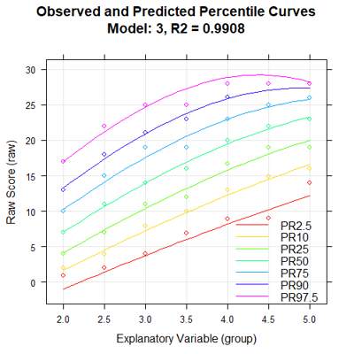

cNORM — Continuous Norming

This application generates continuous norms for psychometric and
biometric test scores. Instead of computing norms separately for each age or
grade group, cNORM models the raw score as a function of both the norm
score and the explanatory variable (e. g. age). The app implements the
distribution-free approach based on regression with Taylor polynomials
(Lenhard et al., 2018, 2019; Lenhard & Lenhard, 2021),
as provided by the cNORM
package for R (version 3.7). The package additionally offers
parametric modelling with the beta-binomial, the sinh-arcsinh (SHASH)
and the Conway-Maxwell-Poisson distribution.
Quick start
- Data – load a built-in example or upload your own file
- Modeling – select the raw-score variable and, if the scores
depend on age or grade, the grouping variable. Choose the norm scale
(T, IQ or z) and adjust the polynomial degrees, then click
Run model. Inspect the percentile plot, the consistency check and
the model-fit curve to decide on the number of terms.
- Prediction – convert single raw scores to norm scores (and vice versa)
or generate and download complete norm tables. Diagnostic plots are available in
the Visualization tab; a stratified Cross-validation can be run
separately.
Data requirements
- Raw-score variable – the test score to be normed.
Ascending scales are supported in this app (descending scales require
the R console, see below).
- Grouping variable (optional) – age group, grade or year (the group mean or midpoint is appropriate).
The groups define the subsamples in which ranks and norm scores are computed
before the model is fitted. If the test is not expected to depend on age or
grade, select (none).
- Cases with missing values in the selected variables are removed automatically;
the number of removed cases is reported in the model summary.
- If age is recorded continuously, use the
parametric modelling app,
or the sliding-window ranking (
age and width
arguments) on the R console.
Built-in example data sets
- elfe – reading comprehension in primary school
(sentence-completion task, raw score 0–28), grouped by grade.
- ppvt – Peabody Picture Vocabulary Test IV norming sample,
ages 2.5–17.5, raw score 0–228.
- CDC – epidemiological growth data (BMI, weight, height),
ages 2–18, from the CDC.
Modelling without a grouping variable
When the grouping variable is set to (none), the whole sample is treated as a
single group. Norm scores are derived from the ranks in the total sample and the raw score is
modelled as a polynomial of the norm score only (t = 0; the degree t is
ignored). The resulting norm table is valid for one population only. Please note that some of the
other functions are unavailbale in this case.
Model parameters
| Parameter | Meaning and recommendation |
|---|
| Grouping variable |
Numeric variable that defines the subsamples (e. g. age group or grade) for
ranking and for the explanatory variable of the regression. Select (none) to
model without age or group dependency. |
| Norm scale |
Scale of the norm scores (T: M = 50, SD = 10; IQ: M = 100, SD = 15; z: M = 0, SD = 1). |
| k |
Maximum polynomial degree of the location, i. e. the norm score
(default 5). Higher values allow more flexible score distributions
(skew, floor and ceiling effects) at the cost of potential overfitting. |
| t |
Maximum polynomial degree of the explanatory variable (typically age;
package default 3). Developmental trajectories are usually smooth, so
2–3 is generally sufficient. |
| Number of terms |
Number of polynomial terms retained from the regression.
Leave blank for automatic selection, or enter a fixed value, ideally at the
“elbow” of the model-fit curve. |
Evaluating the model
A high R2 alone does not establish a good norming model. Please
check the following before using the norms:
- Percentile plot – the model-implied curves should follow the
empirical percentiles (points) closely and run smoothly across the full age range.
- Consistency check – percentile curves must not intersect, and raw scores must
increase monotonically with the norm score at every age. Violations, especially
at the extremes or at the edges of the age range, indicate overfitting or a
too complex model.
- Model-fit curve – compare the fit across models of different size
and choose the smallest model beyond which the gain is negligible.
- Cross-validation – assess the stability of the model on
held-out data and compare the candidate models.
- Range of validity – norm scores are interpolated within the observed age
range and should not be extrapolated beyond it. Extreme norm scores
(beyond approximately ±2.5 SD) depend strongly on the
model and on the sample size and should be interpreted with caution.
In case of overfit (e. g. wavy percentile lines) reduce the degree of age (t) and/or location (k).
Advanced options on the R console
The GUI covers the most important functionality. The following require the R console:
weighting and post-stratification (e. g. raking via iterative proportional
fitting) to correct for unrepresentative samples, descending scores, the choice of ranking
method and handling of ties, sliding-window ranking for continuous age, extended cross-validation,
model-implied moments (predictMoments()) and predicting norm scores for new data
based on an existing model.
Privacy
When launched locally via cNORM.GUI(), all data stays on
your computer. The online application is hosted on ISO 27001-certified
IONOS servers located in the European Union (Frankfurt, Germany), in compliance with
the General Data Protection Regulation (GDPR). cNORM does not store uploaded
data; nothing you upload is retained.
Citation and references
Please cite the package (see citation("cNORM")) and the methodological
papers relevant to your analysis.
- cNORM on CRAN ·
Tutorial & manual ·
GitHub (issues & source)
- Lenhard, A., Lenhard, W., Suggate, S. & Segerer, R. (2018).
A continuous solution to the norming problem. Assessment, 25(1),
112–125. doi:10.1177/1073191116656437
- Lenhard, A., Lenhard, W. & Gary, S. (2019). Continuous norming of
psychometric tests: A simulation study of parametric and
semi-parametric approaches. PLoS ONE, 14(9), e0222279.
- Lenhard, W. & Lenhard, A. (2021). Improvement of norm score
quality via regression-based continuous norming.
Educational and Psychological Measurement, 81(2), 229–261.
doi:10.1177/0013164420928457
- Gary, S., Lenhard, W. & Lenhard, A. (2021). Modelling norm scores with the
cNORM package in R. Psych, 3(3), 501–521. doi:10.3390/psych3030033